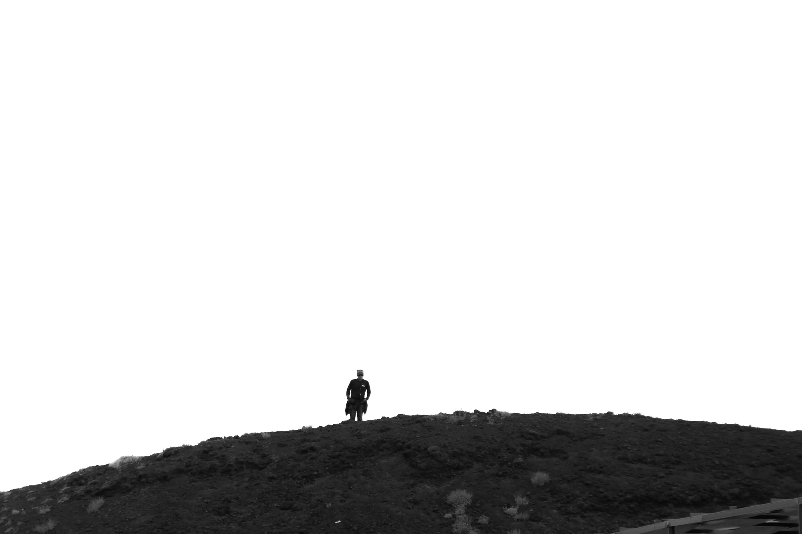
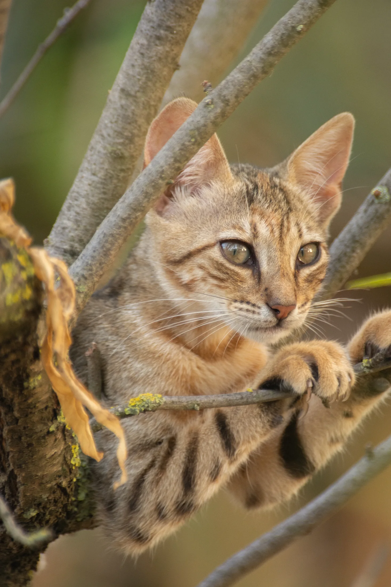
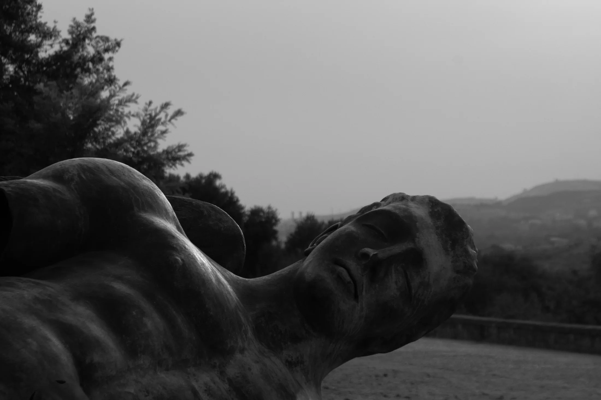
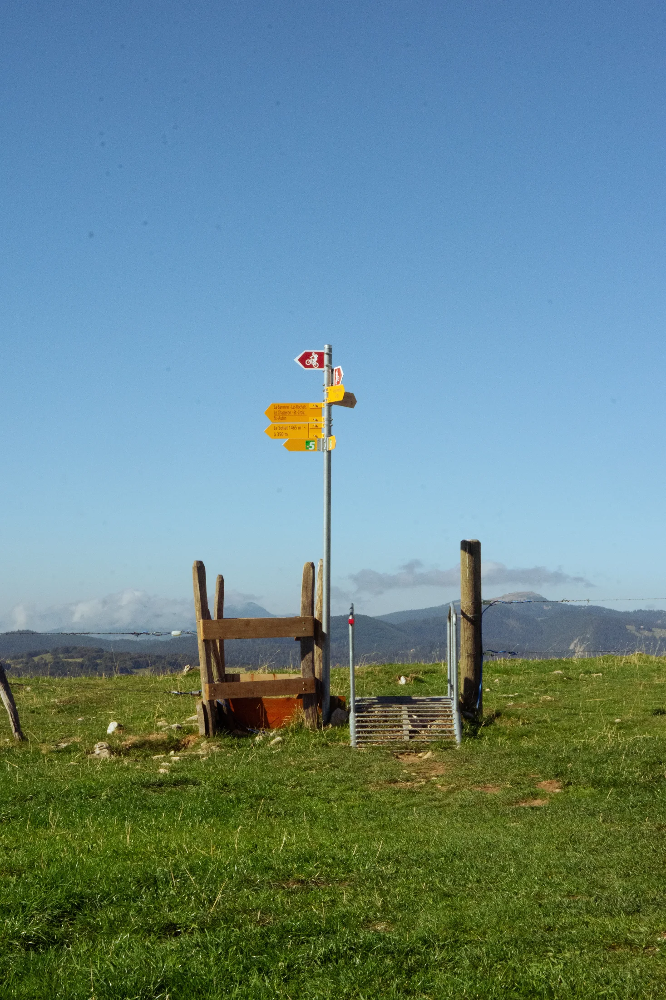
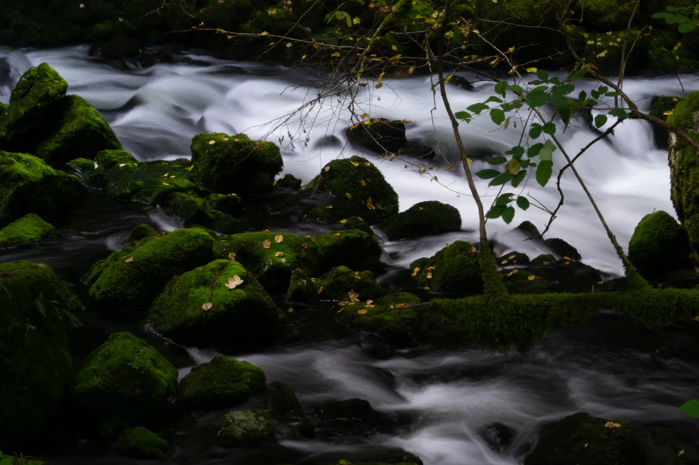
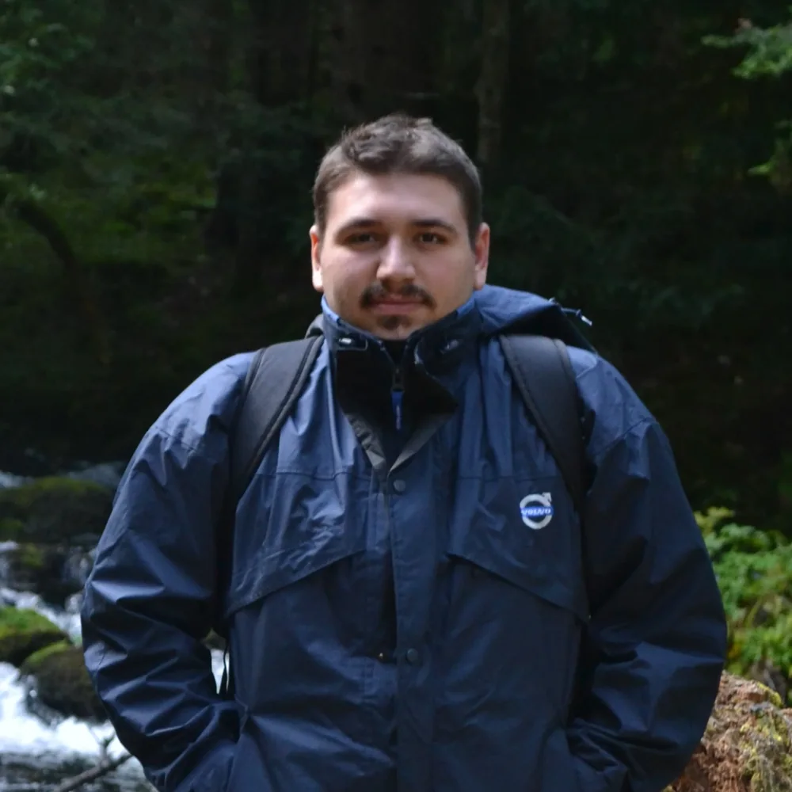

01Tempel der EintrachtSizilien









Architektur & Antike — Agrigento, Sizilien
Geologie & Licht — Waadt, Schweiz
Landschaft & Fauna — Schweizer Jura
Wildlife & Beobachtungen — Drei-Seen-Land

Fotograf aus Lyss, Kanton Bern.
Mich fasziniert der stille Moment, bevor ein Motiv wieder verschwindet — das Zusammenspiel von Licht, Geometrie und Geduld. Ob antike Architektur, die Weite des Schweizer Juras oder flüchtige Begegnungen in der Natur: Meine Arbeit sucht nach Ruhe und klarer Form im Alltäglichen.